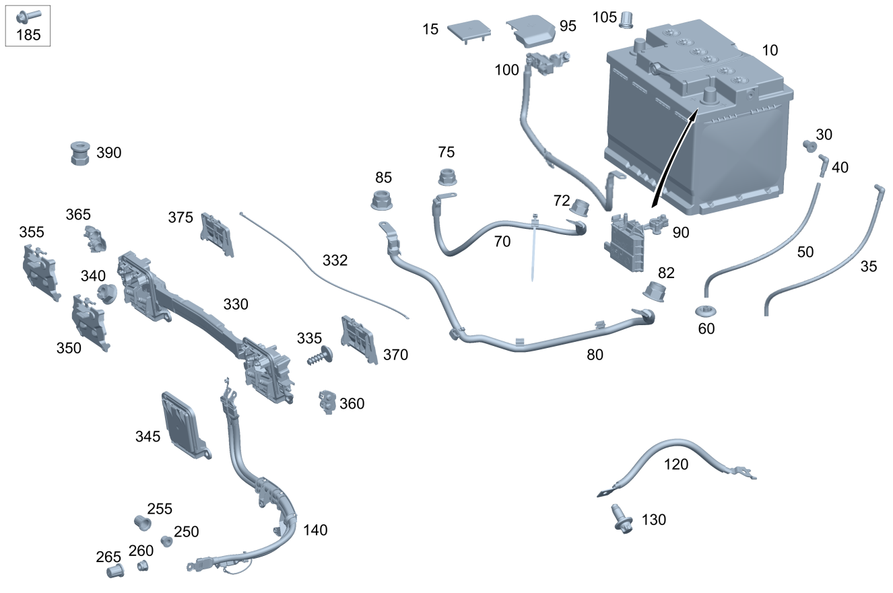

| № | Артикул | Название | Кол. | Примечание | Ограничение |
|---|---|---|---|---|---|
| 10 | A 000 982 38 04 | АКБ бортовой сети (ELECTRICAL SYSTEM BATTERY) | 1 | В моторном отсеке; 12V 80AH | (M642/M651/M654/M656)+-(700/821/9O1) |
| 10 | A 001 982 81 08 | АКБ бортовой сети (ELECTRICAL SYSTEM BATTERY) | 1 | В моторном отсеке; 12V/80AH | (M642/M651/M654/M656)+-(821/U98) |
| 10 | A 001 982 81 08 | АКБ бортовой сети (ELECTRICAL SYSTEM BATTERY) | 1 | В моторном отсеке; 12V/80AH | M642/M651 |
| 10 | A 002 982 06 08 | АКБ бортовой сети (ELECTRICAL SYSTEM BATTERY) | 1 | В моторном отсеке; 12V/78AH [672] ДЕТАЛЬ ПОСЛЕ УСТАН.ПРОВЕРИТЬ НА АКТУАЛЬНОСТЬ "ПРОШИВНОГО" ПО | (806/807/808/809)+(M276/M642/M651)+U98 |
| 10 | A 000 982 53 03 | АКБ бортовой сети (ELECTRICAL SYSTEM BATTERY) | 1 | В моторном отсеке; 12V 78AH LI\-ION [672] ДЕТАЛЬ ПОСЛЕ УСТАН.ПРОВЕРИТЬ НА АКТУАЛЬНОСТЬ "ПРОШИВНОГО" ПО | (806/807/808/809)+(M276/M642/M651)+U98 |
| 10 | A 000 982 64 05 | АКБ бортовой сети (ELECTRICAL SYSTEM BATTERY) | 1 | В моторном отсеке; 12V/78AH [672] ДЕТАЛЬ ПОСЛЕ УСТАН.ПРОВЕРИТЬ НА АКТУАЛЬНОСТЬ "ПРОШИВНОГО" ПО | (806/807/808/809)+(M276/M642/M651/M654/M656)+U98 |
| 10 | A 000 982 43 20 | Стартерная АКБ (STARTER BATTERY) | 1 | В моторном отсеке [433] При продаже высоковольтной аккумуляторной батареи конечным клиентам / через отдел продаж на СТОА необходимо передавать документ AH54.10-P-0001-01A с указанием по высоковольтной аккумуляторной батарее [672] ДЕТАЛЬ ПОСЛЕ УСТАН.ПРОВЕРИТЬ НА АКТУАЛЬНОСТЬ "ПРОШИВНОГО" ПО [402] БОЛЬШЕ НЕ ПОСТАВЛЯЕТСЯ | B01 |
| 10 | A 000 982 84 12 | Стартерная АКБ | 1 | В моторном отсеке | U98+-(806/807/808/809/800+-050) |
| 10 | A 000 982 75 10 | Стартерная АКБ (STARTER BATTERY) | 1 | В моторном отсеке [672] ДЕТАЛЬ ПОСЛЕ УСТАН.ПРОВЕРИТЬ НА АКТУАЛЬНОСТЬ "ПРОШИВНОГО" ПО | U98+-(806/807/808/809/800+-050) |
| 10 | A 000 982 60 22 | Стартерная АКБ | 1 | В моторном отсеке [433] При продаже высоковольтной аккумуляторной батареи конечным клиентам / через отдел продаж на СТОА необходимо передавать документ AH54.10-P-0001-01A с указанием по высоковольтной аккумуляторной батарее [672] ДЕТАЛЬ ПОСЛЕ УСТАН.ПРОВЕРИТЬ НА АКТУАЛЬНОСТЬ "ПРОШИВНОГО" ПО [402] БОЛЬШЕ НЕ ПОСТАВЛЯЕТСЯ | B01+803 |
| 10 | A 000 982 60 22 | Стартерная АКБ | 1 | В моторном отсеке [433] При продаже высоковольтной аккумуляторной батареи конечным клиентам / через отдел продаж на СТОА необходимо передавать документ AH54.10-P-0001-01A с указанием по высоковольтной аккумуляторной батарее [672] ДЕТАЛЬ ПОСЛЕ УСТАН.ПРОВЕРИТЬ НА АКТУАЛЬНОСТЬ "ПРОШИВНОГО" ПО [402] БОЛЬШЕ НЕ ПОСТАВЛЯЕТСЯ | B01 |
| 10 | A 001 982 80 08 | АКБ бортовой сети (ELECTRICAL SYSTEM BATTERY) | 1 | В моторном отсеке; 12V/70AH | B01 |
| 15 | A 001 546 08 35 | Защитный колпачок (PROTECTIVE CAP) | 1 | Защитный колпачок для полюсного вывода | (806/807/808/809)+-(B01/U98/ME05) |
| 30 | A 002 997 24 86 | Пробка (GROMMET) | 1 | Заглушка газоотвод аккумуляторной батареи; 6X8 MM | -(B01/ME05) |
| 35 | A 009 997 16 52 | Вентиляционный шланг (VENT HOSE) | 1 | Вентиляция АКБ | -B01 |
| 35 | A 011 997 01 52 | Вентиляционный шланг (VENT HOSE) | 1 | Вентиляция АКБ | -B01 |
| 35 | A 000 997 45 07 | Вентиляционный шланг (VENT HOSE) | 1 | Вентиляционный трубопровод АКБ | -B01 |
| 40 | A 000 990 38 72 | Угловой штуцер (ANGLE PIECE) | 1 | К аккумуляторной батарее сбоку | U98+-B01+-(ME05/B01) |
| 50 | A 024 997 49 82 | Шланг (HOSE) | NB | Вентиляция АКБ; 5 X 1 MM Рулевое управление: Влево [404] ЗАКАЗЫВАТЬ ПОГОННЫМИ МЕТРАМИ | U98+-(B01/ME05) |
| 50 | A 024 997 49 82 | Шланг (HOSE) | NB | Вентиляция АКБ; 5 X 1 MM Рулевое управление: Вправо [404] ЗАКАЗЫВАТЬ ПОГОННЫМИ МЕТРАМИ | U98+-(B01/ME05) |
| 55 | N 913025 008000 | Гайка (NUT) | 1 | Жгут проводов стартера к токоподводу (на кузове); M8 | -(ME05/B01) |
| 60 | A 000 998 18 50 | Пробка (STOP PLUG) | 1 | Пространство для ног со стороны водителя; 11 MM | |
| 60 | A 000 998 18 50 | Пробка (STOP PLUG) | 1 | Пространство для ног со стороны переднего пассажира; 11 MM | |
| 70 | A 253 540 12 01 | Электрический жгут (ELECTRICAL WIRING HARNESS) | 1 | Жгут проводов стартера к токоподводу Рулевое управление: Влево | -(B01/9O1) |
| 70 | A 253 540 14 01 | Электрический жгут (ELECTRICAL WIRING HARNESS) | 1 | Жгут проводов стартера к токоподводу Рулевое управление: Вправо | -(B01/9O1) |
| 72 | N 913025 008000 | Гайка (NUT) | 1 | Жгут проводов стартера к токоподводу (на кузове); M8 | -(ME05/B01) |
| 75 | N 913025 008000 | Гайка (NUT) | 1 | Жгут электропроводки стартера; M8 | -(B01/ME04/ME05) |
| 80 | Q 000000000002 | Возможен заказ только отдельных компонентов жгута проводов | 1 | Жгут проводов генератора к токоподводу Рулевое управление: Влево | M642/M651 |
| 80 | A 253 540 06 01 | Электрический жгут (ELECTRICAL WIRING HARNESS) | 1 | Жгут проводов генератора к токоподводу Рулевое управление: Вправо | (806/807/808/809)+(M642/M651)+-(ME05/B01) |
| 80 | A 253 540 04 01 | Электрический жгут (ELECTRICAL WIRING HARNESS) | 1 | Жгут проводов генератора к токоподводу Рулевое управление: Вправо | (M642/M651/M654/M656/M177)+800+-(ME05/B01) |
| 82 | N 913025 008000 | Гайка (NUT) | 1 | Жгут проводов генератора к токоподводу (на кузове); M8 | -(ME05/B01) |
| 85 | N 913025 008000 | Гайка (NUT) | 1 | Крепление жгута проводов генератора на блоке силовых предохранителей; M8 | -(B01/ME05) |
| 90 | A 000 906 15 05 | Реле тока (CURRENT LIMITER) | 2 | ||
| 90 | A 000 906 15 05 | Реле тока (CURRENT LIMITER) | 1 | -(M264+L/B01) | |
| 95 | A 000 546 85 02 | Изолирующая крышка (INSULATING CAP) | 1 | Ограничитель тока | (806/807)+-(M274/B01) |
| 95 | A 000 546 85 02 | Изолирующая крышка (INSULATING CAP) | 1 | Ограничитель тока | (808/809)+-(M274/B01) |
| 95 | A 000 546 85 02 | Изолирующая крышка (INSULATING CAP) | 1 | Ограничитель тока | -(M264+L/B01) |
| 100 | A 000 905 04 54 | Датчик АКБ (BATTERY SENSOR) | 1 | Массовый провод с датчиком АКБ Рулевое управление: Влево [414] СТАРУЮ ДЕТАЛЬ УСТАНАВЛИВАТЬ БОЛЬШЕ НЕ РАЗРЕШАЕТСЯ | -B01 |
| 100 | A 000 905 64 07 | Датчик АКБ (BATTERY SENSOR) | 1 | Массовый провод с датчиком АКБ Рулевое управление: Влево | -B01 |
| 100 | A 000 905 88 12 | Датчик АКБ (BATTERY SENSOR) | 1 | Массовый провод с датчиком АКБ Рулевое управление: Влево | -B01 |
| 100 | A 000 905 05 54 | Датчик АКБ (BATTERY SENSOR) | 1 | Массовый провод с датчиком АКБ Рулевое управление: Вправо [414] СТАРУЮ ДЕТАЛЬ УСТАНАВЛИВАТЬ БОЛЬШЕ НЕ РАЗРЕШАЕТСЯ | -B01 |
| 100 | A 000 905 65 07 | Датчик АКБ (BATTERY SENSOR) | 1 | Массовый провод с датчиком АКБ Рулевое управление: Вправо | -B01 |
| 100 | A 000 905 89 12 | Датчик АКБ (BATTERY SENSOR) | 1 | Массовый провод с датчиком АКБ Рулевое управление: Вправо | -B01 |
| 100 | A 000 905 47 16 | Датчик АКБ (BATTERY SENSOR) | 1 | Массовый провод с датчиком АКБ Рулевое управление: Влево | 803 |
| 100 | A 000 905 47 16 | Датчик АКБ (BATTERY SENSOR) | 1 | Массовый провод с датчиком АКБ Рулевое управление: Влево | |
| 100 | A 000 905 35 16 | Датчик АКБ (BATTERY SENSOR) | 1 | Массовый провод с датчиком АКБ Рулевое управление: Вправо | 803 |
| 100 | A 000 905 35 16 | Датчик АКБ (BATTERY SENSOR) | 1 | Массовый провод с датчиком АКБ Рулевое управление: Вправо | |
| 100 | A 000 905 46 16 | Датчик АКБ (BATTERY SENSOR) | 1 | Массовый провод с датчиком АКБ | 803+B01 |
| 100 | A 000 905 46 16 | Датчик АКБ (BATTERY SENSOR) | 1 | Массовый провод с датчиком АКБ | B01 |
| 105 | A 001 546 61 35 | Защитный колпачок (PROTECTIVE CAP) | 1 | Вывод соединения с массой; M8 Рулевое управление: Вправо | |
| 120 | A 205 540 76 16 | Электрический жгут (ELECTRICAL WIRING HARNESS) | 1 | Массовый провод двигателя | M274/M642/M651 |
| 130 | N 000000 000276 | Винт с 6-гр. глвк (HEXALOBULAR SCREW) | 1 | Массовый провод к коробке передач; M8X20 | 421 |
| 140 | A 253 540 31 13 | Электрический жгут (ELECTRICAL WIRING HARNESS) | 1 | Разъем к стартеру, генератору и выходному каскаду свечей накаливания | M642+M005 |
| 185 | N 000000 001116 | Винт с 6-гр. глвк (HEXALOBULAR SCREW) | 1 | Жгут электропроводки стартера\-генератора к кронштейну опоры двигателя справа; M6X19 | M642 |
| 185 | N 000000 001116 | Винт с 6-гр. глвк (HEXALOBULAR SCREW) | 3 | Жгут электропроводки стартера/генератора к картеру гидротрансформатора слева; M6X19 | M642 |
| 260 | A 000 548 04 72 | гайка (NUT) | 1 | Крепление жгута электропроводки клеммы 30 к стартеру; M8 | |
| 260 | A 000 990 43 37 | Шестигранная гайка (HEXAGON NUT) | 1 | Крепление жгута проводов электр. цепи клеммы 50 к стартеру; M6 | -(B01/9O1) |
| 260 | N 000000 008290 | Шестигранная гайка (HEXAGON NUT) | 1 | Крепление жгута проводов электр. цепи клеммы 50 к стартеру; M6 | -(B01/9O1) |
| 265 | A 001 546 61 35 | Защитный колпачок (PROTECTIVE CAP) | 1 | Защита от прикосновения для клеммы 30, стартер; M8 | M264+-B01/M274/M276+M002/M642/M651/M177/M654/M656 |
| 330 | A 205 545 51 00 | Сборная шина (BUSBAR) | 1 | -(M274/M651/M256/M264/M654+R/M656+R/M276+R/M642+R) | |
| 330 | A 205 545 91 00 | Сборная шина (BUSBAR) | 1 | -(M274/M651/M256/M264/M654+R/M656+R/M276+R/M642+R/M177+L) | |
| 330 | A 205 545 08 01 | Сборная шина (BUSBAR) | 1 | -(M274/M651/M654+R/M656+R/M276+R/M642+R/M177+L) | |
| 330 | A 205 545 22 01 | Сборная шина (BUSBAR) | 1 | -(M274/M651/M654+R/M656+R/M276+R/M642+R/M177) | |
| 330 | A 205 545 15 00 | Сборная шина (BUSBAR) | 1 | Рулевое управление: Вправо | M276/M642/M654/M656 |
| 332 | A 213 540 77 99 | Электрический жгут (ELECTRICAL WIRING HARNESS) | 1 | Переходный провод токопроводящей шины X244/9 TO X244/10 | |
| 335 | A 001 984 67 29 | Болт с головкой торкс (HEXALOBULAR BOLT) | 4 | Крепление токопроводящей шины; 6X12 | |
| 335 | A 000 990 53 15 | Винт со полукругл.головой (PAN HEAD SCREW W COLLAR) | 4 | Крепление токопроводящей шины | |
| 340 | N 000000 003175 | Гайка (NUT) | 1 | Жгут проводов генератора к токопроводящей шине; M8 Рулевое управление: Влево | M276/M642/M654/M656 |
| 340 | N 000000 003175 | Гайка (NUT) | 1 | Жгут проводов генератора к токопроводящей шине; M8 Рулевое управление: Вправо | M276/M642/M654/M656 |
| 340 | N 000000 003175 | Гайка (NUT) | 1 | Жгут электропроводки стартера к токопроводящей шине; M8 Рулевое управление: Влево | M276/M642/M654/M656 |
| 340 | N 000000 003175 | Гайка (NUT) | 1 | Жгут электропроводки стартера к токопроводящей шине; M8 Рулевое управление: Вправо | M276/M642/M654/M656 |
| 345 | A 205 545 06 00 | Колпачок сборной шины (COVER CAP, BUSBAR) | 1 | Заглушка Рулевое управление: Вправо | M264+B01/M276/M642/M654/M656 |
| 350 | A 205 545 07 00 | Колпачок сборной шины (COVER CAP, BUSBAR) | 2 | Со стороны двигателя Рулевое управление: Влево | M276+-2U8/M642/M654/M656 |
| 350 | A 205 545 07 00 | Колпачок сборной шины (COVER CAP, BUSBAR) | 1 | Со стороны двигателя Рулевое управление: Вправо | M276+-2U8/M642/M654/M656/M264+B01 |
| 360 | A 205 545 11 00 | Колпачок сборной шины (COVER CAP, BUSBAR) | 1 | Сбоку слева Рулевое управление: Влево | M274+ME05+421/M276/M642/M654/M656 |
| 360 | A 205 545 29 01 | Колпачок сборной шины (COVER CAP, BUSBAR) | 1 | Сбоку слева Рулевое управление: Влево | M274+ME05+421/M276/M642/M654/M656 |
| 360 | A 205 545 11 00 | Колпачок сборной шины (COVER CAP, BUSBAR) | 1 | Сбоку слева Рулевое управление: Вправо | M177/M264+-B01/M274/M276/M642/M651/M654/M656 |
| 360 | A 205 545 29 01 | Колпачок сборной шины (COVER CAP, BUSBAR) | 1 | Сбоку слева Рулевое управление: Вправо | M177/M264+-B01/M274/M276/M642/M651/M654/M656 |
| 365 | A 205 545 10 00 | Колпачок сборной шины (COVER CAP, BUSBAR) | 1 | Сбоку справа Рулевое управление: Влево | M264+-B01/M177/M274/M276/M642/M651/M654/M656 |
| 365 | A 205 545 28 01 | Колпачок сборной шины (COVER CAP, BUSBAR) | 1 | Сбоку справа Рулевое управление: Влево | M264+-B01/M177/M274/M276/M642/M651/M654/M656 |
| 370 | A 205 545 18 00 | Колпачок сборной шины (COVER CAP, BUSBAR) | 1 | Слева | -(M274/M651/M177) |
| 390 | A 001 990 85 52 | Гайка специальной формы (NUT, SPECIAL FORM) | 1 | Пуск двигателя от внешнего источника питания, минусовой вывод | |
| 390 | A 001 990 85 52 | Гайка специальной формы (NUT, SPECIAL FORM) | 1 | Пуск двигателя от внешнего источника питания, минусовой вывод | |
| 500 | A 000 982 52 13 | Стартерная АКБ (STARTER BATTERY) | 1 | Моторный отсек; 48V/20AH [003994] ТАКЖЕ ЗАКАЗАТЬ: A 222 989 00 00 TS ТОКОПРОВОДЯЩАЯ ПАСТА | B01 |
| 500 | A 000 982 68 14 | Стартерная АКБ (STARTER BATTERY) | 1 | Моторный отсек [672] ДЕТАЛЬ ПОСЛЕ УСТАН.ПРОВЕРИТЬ НА АКТУАЛЬНОСТЬ "ПРОШИВНОГО" ПО | B01 |
| 500 | A 000 982 68 14 | Стартерная АКБ (STARTER BATTERY) | 1 | Моторный отсек [672] ДЕТАЛЬ ПОСЛЕ УСТАН.ПРОВЕРИТЬ НА АКТУАЛЬНОСТЬ "ПРОШИВНОГО" ПО | B01+800+050 |
| 500 | A 000 982 68 14 | Стартерная АКБ (STARTER BATTERY) | 1 | Моторный отсек Рулевое управление: Влево [672] ДЕТАЛЬ ПОСЛЕ УСТАН.ПРОВЕРИТЬ НА АКТУАЛЬНОСТЬ "ПРОШИВНОГО" ПО | B01+830+800 |
| 500 | A 000 982 03 16 | Стартерная АКБ (STARTER BATTERY) | 1 | Моторный отсек | (B01/B01+(830/835))+801 |
| 500 | A 000 982 03 16 | Стартерная АКБ (STARTER BATTERY) | 1 | Моторный отсек | B01 |
| 500 | A 000 982 34 17 | Стартерная АКБ (STARTER BATTERY) | 1 | Моторный отсек [672] ДЕТАЛЬ ПОСЛЕ УСТАН.ПРОВЕРИТЬ НА АКТУАЛЬНОСТЬ "ПРОШИВНОГО" ПО | B01 |
| 500 | A 000 982 34 17 | Стартерная АКБ (STARTER BATTERY) | 1 | Моторный отсек Рулевое управление: Влево [672] ДЕТАЛЬ ПОСЛЕ УСТАН.ПРОВЕРИТЬ НА АКТУАЛЬНОСТЬ "ПРОШИВНОГО" ПО | B01+835 |
| 500 | A 000 982 72 16 | Стартерная АКБ (STARTER BATTERY) | 1 | Моторный отсек | B01+(498/830) |
| 500 | A 000 982 72 16 | Стартерная АКБ (STARTER BATTERY) | 1 | Моторный отсек | B01 |
| 500 | A 000 982 72 16 | Стартерная АКБ (STARTER BATTERY) | 1 | Моторный отсек | B01+802 |
| 500 | A 000 982 45 20 | Стартерная АКБ (STARTER BATTERY) | 1 | Моторный отсек [433] При продаже высоковольтной аккумуляторной батареи конечным клиентам / через отдел продаж на СТОА необходимо передавать документ AH54.10-P-0001-01A с указанием по высоковольтной аккумуляторной батарее [672] ДЕТАЛЬ ПОСЛЕ УСТАН.ПРОВЕРИТЬ НА АКТУАЛЬНОСТЬ "ПРОШИВНОГО" ПО | B01 |
| 500 | A 000 982 62 22 | Стартерная АКБ (STARTER BATTERY) | 1 | Моторный отсек [433] При продаже высоковольтной аккумуляторной батареи конечным клиентам / через отдел продаж на СТОА необходимо передавать документ AH54.10-P-0001-01A с указанием по высоковольтной аккумуляторной батарее [672] ДЕТАЛЬ ПОСЛЕ УСТАН.ПРОВЕРИТЬ НА АКТУАЛЬНОСТЬ "ПРОШИВНОГО" ПО | B01+803 |
| 500 | A 000 982 62 22 | Стартерная АКБ (STARTER BATTERY) | 1 | Моторный отсек [433] При продаже высоковольтной аккумуляторной батареи конечным клиентам / через отдел продаж на СТОА необходимо передавать документ AH54.10-P-0001-01A с указанием по высоковольтной аккумуляторной батарее [672] ДЕТАЛЬ ПОСЛЕ УСТАН.ПРОВЕРИТЬ НА АКТУАЛЬНОСТЬ "ПРОШИВНОГО" ПО | B01 |
| 510 | A 000 900 36 18 | Блок управления (CONTROL UNIT) | 1 | Преобразователь DC/DC [672] ДЕТАЛЬ ПОСЛЕ УСТАН.ПРОВЕРИТЬ НА АКТУАЛЬНОСТЬ "ПРОШИВНОГО" ПО [003994] ТАКЖЕ ЗАКАЗАТЬ: A 222 989 00 00 TS ТОКОПРОВОДЯЩАЯ ПАСТА | (800+-050)+B01+L |
| 510 | A 000 900 69 20 | Блок управления (CONTROL UNIT) | 1 | Преобразователь DC/DC [672] ДЕТАЛЬ ПОСЛЕ УСТАН.ПРОВЕРИТЬ НА АКТУАЛЬНОСТЬ "ПРОШИВНОГО" ПО [003994] ТАКЖЕ ЗАКАЗАТЬ: A 222 989 00 00 TS ТОКОПРОВОДЯЩАЯ ПАСТА | B01+(800+050/801) |
| 510 | A 000 900 69 20 | Блок управления (CONTROL UNIT) | 1 | Преобразователь DC/DC [672] ДЕТАЛЬ ПОСЛЕ УСТАН.ПРОВЕРИТЬ НА АКТУАЛЬНОСТЬ "ПРОШИВНОГО" ПО [003994] ТАКЖЕ ЗАКАЗАТЬ: A 222 989 00 00 TS ТОКОПРОВОДЯЩАЯ ПАСТА | B01 |
| 510 | A 000 900 69 20 | Блок управления (CONTROL UNIT) | 1 | Преобразователь DC/DC [672] ДЕТАЛЬ ПОСЛЕ УСТАН.ПРОВЕРИТЬ НА АКТУАЛЬНОСТЬ "ПРОШИВНОГО" ПО [003994] ТАКЖЕ ЗАКАЗАТЬ: A 222 989 00 00 TS ТОКОПРОВОДЯЩАЯ ПАСТА | B01 |
| 510 | A 000 900 36 18 | Блок управления (CONTROL UNIT) | 1 | Преобразователь DC/DC Рулевое управление: Влево [672] ДЕТАЛЬ ПОСЛЕ УСТАН.ПРОВЕРИТЬ НА АКТУАЛЬНОСТЬ "ПРОШИВНОГО" ПО | B01+835 |
| 510 | A 000 900 36 18 | Блок управления (CONTROL UNIT) | 1 | Преобразователь DC/DC Рулевое управление: Влево [672] ДЕТАЛЬ ПОСЛЕ УСТАН.ПРОВЕРИТЬ НА АКТУАЛЬНОСТЬ "ПРОШИВНОГО" ПО | B01+835+800+050 |
| 510 | A 000 900 69 20 | Блок управления (CONTROL UNIT) | 1 | Преобразователь DC/DC Рулевое управление: Вправо [672] ДЕТАЛЬ ПОСЛЕ УСТАН.ПРОВЕРИТЬ НА АКТУАЛЬНОСТЬ "ПРОШИВНОГО" ПО | (B01/B01+835)+801 |
| 530 | N 000000 001588 | Винт с 6-гр. глвк (HEXALOBULAR SCREW) | 2 | Крепление преобразователя постоянного тока к держателю; M5XDT19 | B01 |
| 540 | N 000000 008539 | Винт с 6-гр. глвк (HEXALOBULAR SCREW) | 2 | Крепление преобразователя постоянного тока к держателю M5XDT43 | B01 |
| 550 | A 000 546 72 35 | Колпачок штек. разъема (PROTECTIVE CAP, CONNECTOR) | 1 | Плюсовой полюсный вывод преобразователя напряжения постоянного тока | B01 |
| 600 | A 238 340 06 00 | Трубопровод (PIPING) | 1 | Рулевое управление: Влево | B01 |
| 600 | A 238 340 09 00 | Трубопровод (PIPING) | 1 | Рулевое управление: Влево | B01 |
| 600 | A 238 340 08 00 | Трубопровод (PIPING) | 1 | Рулевое управление: Вправо | B01 |
| 600 | A 238 340 10 00 | Трубопровод (PIPING) | 1 | Рулевое управление: Вправо | B01 |
| 610 | A 213 545 40 00 | Держатель (HOLDER) | 1 | Трубопровод Рулевое управление: Вправо | B01 |
| 620 | A 000 990 36 62 | Пластмассовая гайка (PLASTIC NUT) | 1 | Крепление трубопровода Рулевое управление: Влево | B01 |
| 630 | A 000 998 12 00 | Насадка открытая гладкая (GROMMET, OPEN, SMOOTH) | 1 | Рулевое управление: Влево | B01 |
| 630 | A 000 998 84 00 | Насадка открытая гладкая (GROMMET, OPEN, SMOOTH) | 1 | Рулевое управление: Вправо | B01 |
| 640 | A 205 546 39 00 | Кабелепровод (CABLE GUIDE) | 1 | Рулевое управление: Влево | |
| 650 | A 253 540 97 27 | Электрический жгут (ELECTRICAL WIRING HARNESS) | 1 | Массовый провод G1/3 TO W106/3 Рулевое управление: Влево | 800+B01 |
| 650 | A 205 540 05 94 | Электрический жгут (ELECTRICAL WIRING HARNESS) | 1 | Массовый провод G1/3 TO W106/3 Рулевое управление: Влево | 800+B01 |
| 650 | A 205 540 05 94 | Электрический жгут (ELECTRICAL WIRING HARNESS) | 1 | Массовый провод G1/3 TO W106/3 Рулевое управление: Влево | B01 |
| 655 | A 253 540 93 27 | Электрический жгут (ELECTRICAL WIRING HARNESS) | 1 | Массовый провод G1/3*3 TO X244/2*1 Рулевое управление: Влево | 800+B01 |
| 655 | A 253 540 93 27 | Электрический жгут (ELECTRICAL WIRING HARNESS) | 1 | Массовый провод G1/3*3 TO X244/2*1 Рулевое управление: Влево | B01 |
| 655 | A 205 540 04 94 | Электрический жгут (ELECTRICAL WIRING HARNESS) | 1 | Массовый провод G1/3*3 TO X244/2*1 Рулевое управление: Влево | B01 |
| 655 | A 253 540 94 27 | Электрический жгут (ELECTRICAL WIRING HARNESS) | 1 | Массовый провод G1/3*3 TO X244/1*1 Рулевое управление: Вправо | 800+B01 |
| 655 | A 253 540 94 27 | Электрический жгут (ELECTRICAL WIRING HARNESS) | 1 | Массовый провод G1/3*3 TO X244/1*1 Рулевое управление: Вправо | B01 |
| 655 | A 253 540 55 31 | Электрический жгут (ELECTRICAL WIRING HARNESS) | 1 | Массовый провод G1/3*3 TO X244/1*1 Рулевое управление: Вправо | B01 |
| 660 | A 253 540 95 27 | Электрический жгут (ELECTRICAL WIRING HARNESS) | 1 | Провод "массы" преобразователя напряжения постоянного тока N83/1 TO W10 Рулевое управление: Влево | 800+B01 |
| 660 | A 205 540 06 94 | Электрический жгут (ELECTRICAL WIRING HARNESS) | 1 | Провод "массы" преобразователя напряжения постоянного тока N83/1 TO W10 Рулевое управление: Влево | 800+B01 |
| 660 | A 205 540 06 94 | Электрический жгут (ELECTRICAL WIRING HARNESS) | 1 | Провод "массы" преобразователя напряжения постоянного тока N83/1 TO W10 Рулевое управление: Влево | B01 |
| 660 | A 253 540 96 27 | Электрический жгут (ELECTRICAL WIRING HARNESS) | 1 | Провод "массы" преобразователя напряжения постоянного тока N83/1 TO W10 Рулевое управление: Вправо | 800+B01 |
| 660 | A 253 540 96 27 | Электрический жгут (ELECTRICAL WIRING HARNESS) | 1 | Провод "массы" преобразователя напряжения постоянного тока N83/1 TO W10 Рулевое управление: Вправо | B01 |
| 675 | N 000000 000276 | Винт с 6-гр. глвк (HEXALOBULAR SCREW) | 1 | Массовый провод к коробке передач; M8X20 | 421 |
| 700 | A 000 982 37 04 | АКБ бортовой сети (ELECTRICAL SYSTEM BATTERY) | 1 | В багажнике; 12V 70AH | B01+-(821/U98/700) |
| 700 | A 001 982 80 08 | АКБ бортовой сети (ELECTRICAL SYSTEM BATTERY) | 1 | В багажнике; 12V/70AH | B01+-(821/U98/700) |
| 720 | A 000 990 38 72 | Угловой штуцер (ANGLE PIECE) | 1 | Вентиляция АКБ, к АКБ сбоку | B01+-U98 |
| 730 | A 024 997 49 82 | Шланг (HOSE) | NB | Вентиляция АКБ; 5 X 1 MM [404] ЗАКАЗЫВАТЬ ПОГОННЫМИ МЕТРАМИ | B01+-U98 |
| 740 | A 000 998 56 02 | Кабельная втулка (CABLE GROMMET) | 1 | B01 | |
| 750 | A 002 997 24 86 | Пробка (GROMMET) | 1 | Вентиляция АКБ, к АКБ сбоку; 6X8 MM | B01+-U98 |
| 760 | A 000 905 34 06 | Датчик АКБ (BATTERY SENSOR) | 1 | Массовый провод с датчиком АКБ | 800+B01 |
| 760 | A 000 905 87 12 | Датчик АКБ (BATTERY SENSOR) | 1 | Массовый провод с датчиком АКБ | B01 |
| 760 | A 000 905 47 16 | Датчик АКБ (BATTERY SENSOR) | 1 | Массовый провод с датчиком АКБ Рулевое управление: Влево | 803 |
| 760 | A 000 905 47 16 | Датчик АКБ (BATTERY SENSOR) | 1 | Массовый провод с датчиком АКБ Рулевое управление: Влево | |
| 760 | A 000 905 35 16 | Датчик АКБ (BATTERY SENSOR) | 1 | Массовый провод с датчиком АКБ Рулевое управление: Вправо | 803 |
| 760 | A 000 905 35 16 | Датчик АКБ (BATTERY SENSOR) | 1 | Массовый провод с датчиком АКБ Рулевое управление: Вправо | |
| 760 | A 000 905 46 16 | Датчик АКБ (BATTERY SENSOR) | 1 | Массовый провод с датчиком АКБ | 803+B01 |
| 760 | A 000 905 46 16 | Датчик АКБ (BATTERY SENSOR) | 1 | Массовый провод с датчиком АКБ | B01 |
| 805 | A 213 540 77 99 | Электрический жгут (ELECTRICAL WIRING HARNESS) | 1 | Переходный провод токопроводящей шины X244/9 TO X244/10 | |
| 810 | A 000 990 53 15 | Винт со полукругл.головой (PAN HEAD SCREW W COLLAR) | 4 | Крепление токопроводящей шины | |
| 830 | A 205 545 06 00 | Колпачок сборной шины (COVER CAP, BUSBAR) | 1 | Заглушка Рулевое управление: Вправо | M264+B01/M276/M642/M654/M656 |
| 840 | A 205 545 07 00 | Колпачок сборной шины (COVER CAP, BUSBAR) | 1 | Со стороны двигателя Рулевое управление: Вправо | M276+-2U8/M642/M654/M656/M264+B01 |
| 870 | A 205 545 18 00 | Колпачок сборной шины (COVER CAP, BUSBAR) | 1 | Слева | -(M274/M651/M177) |
| 890 | N 913025 008000 | Гайка (NUT) | 4 | Провод к аккумуляторному элементу; M8 | B01 |
| 890 | N 913025 008000 | Гайка (NUT) | 1 | Жгут проводов генератора к токоподводу (на кузове); M8 | B01 |
| 890 | N 913025 008000 | Гайка (NUT) | 1 | Крепление блока силовых предохранителей; M8 Рулевое управление: Влево | B01 |
| 890 | N 913025 008000 | Гайка (NUT) | 1 | Крепление блока силовых предохранителей; M8 Рулевое управление: Вправо | B01 |
| 890 | A 000 548 04 72 | гайка (NUT) | 2 | Жгут электропроводки к генератору; M8 | B01 |
| 895 | A 001 990 85 52 | Гайка специальной формы (NUT, SPECIAL FORM) | 1 | Пуск двигателя от внешнего источника питания, минусовой вывод | |
| 895 | A 001 990 85 52 | Гайка специальной формы (NUT, SPECIAL FORM) | 1 | Пуск двигателя от внешнего источника питания, минусовой вывод |
Позиций: 157 · подписано на схемах: 157 · колесо — плавный зум в курсор, перетаскивание — пан, двойной клик — зум, клик по артикулу — скопировать.